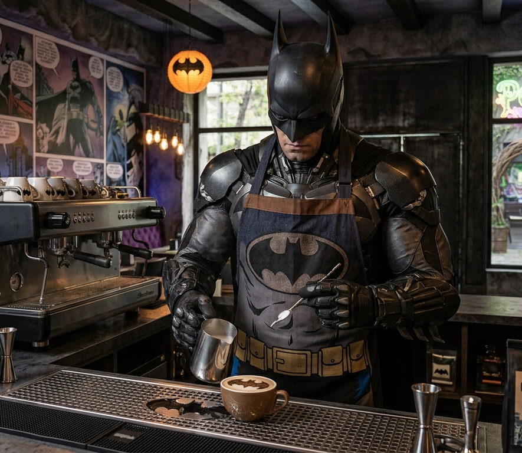

Menu
Cafeteria de especialidad
Gotham cafe
Cafe negro concentrado elaborado con granos seleccionados
BatLatte
Cafe espresso con leche cremada y arte latte de la batiseñal
Joker's mochaccino
Espresso con leche cremada, salsa de chocolate oscuro y un toque especial de especias

Pasteleria artesanal
Torre Wayne
Capas de brownie con crema de avellanas, bañadas en chocolate amargo
Croissant del Dark Knight
Croissant crocante relleno de crema pastelera de pistacho
Cookie Batiseñal
Galleta artesanal tibia horneada con chips de chocolate